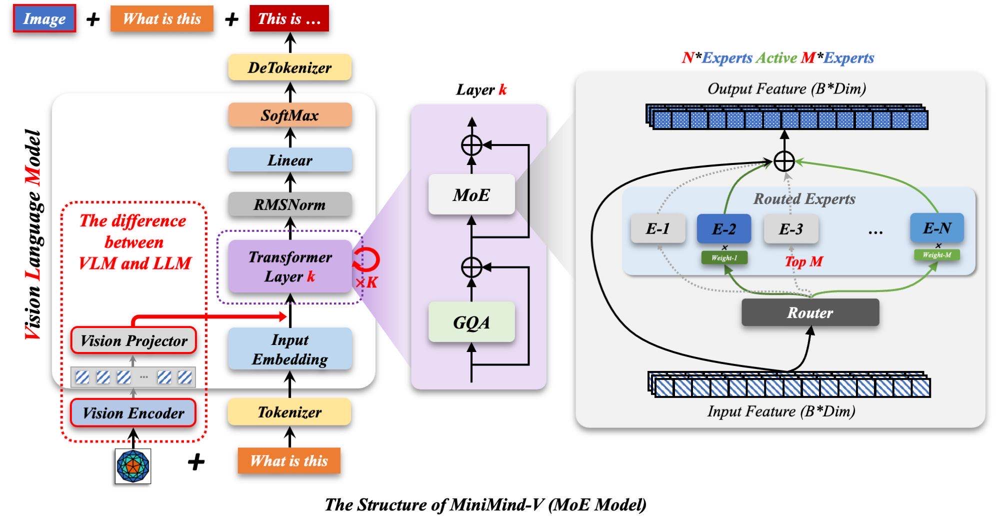

1. 总体结构
MiniMind-V 继承自 MiniMindForCausalLM，没有重写整个语言模型，而是在它前面接入视觉分支。视觉分支输出的 token 和文本 token 在 hidden state 层面融合，后续仍由 MiniMind 的 Transformer 层和 lm_head 完成语言生成。

Dense 版本：LLM 主干约 64M，Projection 约 1M，视觉编码器冻结不计入训练参数。
2. VLMConfig 增加了什么
VLMConfig 继承 MiniMindConfig，只增加和图像有关的字段：
image_special_token='<|image_pad|>'：图像占位符最终展开出的特殊 token。image_ids=[12]：tokenizer 中图像占位 token 对应的 id。image_hidden_size=768：SigLIP2 输出特征维度。image_token_len=64：每张图对应 64 个视觉 token。
class VLMConfig(MiniMindConfig):
model_type = "minimind-v"
def __init__(self, image_special_token='<|image_pad|>', image_ids=[12], **kwargs):
self.image_special_token = image_special_token
self.image_ids = image_ids
self.image_hidden_size = kwargs.get("image_hidden_size", 768)
self.image_token_len = kwargs.get("image_token_len", 64)
super().__init__(**kwargs)3. Projector 是跨模态对齐层
MMVisionProjector 是 LayerNorm 加两层 MLP。它的任务不是“识别图片”，而是把视觉 encoder 的输出映射到 MiniMind hidden size，让视觉 token 能和文本 token 在同一空间交互。
self.mlp = nn.Sequential(
nn.LayerNorm(in_dim),
nn.Linear(in_dim, out_dim),
nn.GELU(),
nn.Linear(out_dim, out_dim),
)
LLaVA-1 使用线性层做对齐，LLaVA-1.5 使用两层 MLP。MiniMind-V README 说明当前版本采用与 LLaVA-1.5 类似的 MLP Projection 方案。
4. forward 里的关键路径
文本 embedding
embed_tokens(input_ids) 得到初始 hidden states。图像 embedding
SiglipVisionModel 输出 last_hidden_state。投影
vision_proj 把 64×768 转到 LLM 维度。替换
count_vision_proj 找到图像 token id 连续段并替换。解码MiniMind 层处理混合后的 hidden states。
注意 start_pos == 0 这个条件：带 KV cache 生成时，图像特征只需要在第一步注入，后续 token 生成沿用缓存即可。
5. 占位符替换机制
count_vision_proj 会扫描每个样本的 token 序列，找到连续的图像 marker。对于第 k 张图，就把对应的视觉 token 张量切进去。这样文本序列长度保持一致，视觉信息却真实进入了 hidden state。
<|image_pad|> × 64 + "\n请描述图片"
↓
64 个占位 embedding 被 64 个 visual embedding 替换
↓
Transformer 接收的是文本 token 与视觉 token 的混合序列6. Dense 与 MoE
Dense 版本每个 token 都经过同一套前馈网络。MoE 版本在 FFN 处引入专家路由，总参数更大，但每个 token 只激活部分专家，所以 README 用 200M-A65M 这样的记法区分总参数与激活参数。

MoE 版本会额外产生路由辅助损失 aux_loss，训练脚本把它与语言建模 loss 相加。